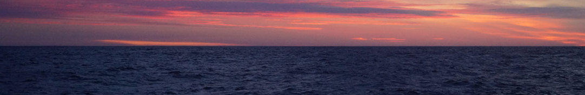

Cómo comenzó
Esta red inició entre un grupo de amigues que nos formamos en Biología y Oceanografía Física en la Universidad de Buenos Aires, Argentina. La mayoría recién doctorades o a punto de doctorarnos, queríamos pedir fondos, colaborar con nuevas personas e instituciones o realizar postdocs en otro país, actividades claves en nuestro rol como Jóvenes Científicos en Ciencias del Mar.
Hablando entre nosotres nos dimos cuenta que compartíamos las mismas problemáticas más allá de trabajar en distintas disciplinas o con distintos grupos. Y empezamos a intercambiar información y tips entre nosotres.
En ese mismo espíritu, consideramos que la información que fuéramos recopilando tenía que estar disponible para cualquier persona interesada. De esa forma también podíamos retroalimentarnos y seguir creciendo hacia una comunidad colaborativa. Y así nació esta red de y para jóvenes que trabajen en temas relacionados a ciencias del mar en Latinoamérica.
Objetivos
Creemos que es fundamental establecer conexiones y colaboraciones con otros profesionales a nivel nacional e internacional para crear un futuro más equitativo y sostenible.
Es por ello que la Red JICMar tiene cómo objetivos particulares:
Construir una base de datos de instituciones, grupos e individuos relacionados con las ciencias del océano para facilitar la conexión y colaboración entre los miembros.
Compartir información sobre fuentes de financiamiento y sociedades y eventos de interés.
Generar espacios de intercambio entre jóvenes investigadores de ciencias del mar en el marco de talleres, jornadas y reuniones, en los cuales se pueda:
- Poner en común desafíos y problemáticas de la puesta en práctica de la interdisciplina en las Ciencias del Mar.
- Identificar y discutir sobre trabas y problemáticas de origen multicausal que se encuentra cada individuo y cada institución a la hora de hacer ciencia.
- Promover el diálogo entre diferentes actores como academia, sector privado, sector público y sociedad civil.
- Invitar profesionales o miembros que compartan sus trayectorias y experiencias en el campo de las ciencias del océano.
Estructura
Esta red esta formada por y para personas dentro de las Ciencias del Mar en Latinoamérica que:
- se encuentren en los últimos años del Doctorado
- ya Doctoradas que estén buscando oportunidades de trabajo
- ya Doctoradas que trabajen en la administración pública, ONGs o cualquier tipo de institución y se encuentren en sus primeros años de gestión
- que estén realizando un Postdoc.
Actualmente la Red JICMar está gestionada por:
Nicolás Lois
Argentina
Romina Trinchin
Uruguay
Milagro Urricariet
Argentina

Sebastián Cornejo
Chile
Virginia García Alonso
Argentina
Esta red fue fundada y desorrollada en colaboración con:
Daniela Risaro
Argentina
Loreley Lago
Argentina
Sofía Calla
Argentina
Aún estamos en proceso de estructuración y más adelante estaremos dando información sobre cómo sumarse a nuevos roles y tareas.
¡Están todes invitades a sumarse !

Por un horizonte de nuevas oportunidades y colaboraciones en las Ciencias Marinas Latinoamericanas.